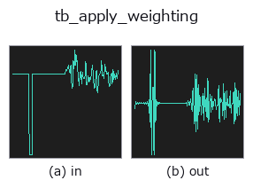

typed op• Datenarten: signal → signal
• Aufruf: fullseye.apply(img, "tb_apply_weighting", a=0.5, b=0.5) (das 2-D-Modell ist ein Bild plus zwei skalare Regler a,b∈[0,1])

*Die Abbildung ist die tatsächliche Ausgabe auf einer synthetischen 128×128-Eingabe. Links Eingabe, rechts Ausgabe. Punktwolken als Draufsicht-Streudiagramm (Helligkeit = z), 1-D-Reihen als Linie, Volumen als Maximum-Projektion entlang z, Videos als mittleres Bild, komplexe Bilder als Betrag; Rückgabewerte, die kein Bild ergeben, werden als Werte gezeigt.*
*Regler a ändert die Ausgabe nicht (gemessen: identisch bei 0,1 / 0,5 / 0,9).*
*Regler b ändert die Ausgabe nicht (gemessen: identisch bei 0,1 / 0,5 / 0,9).*
Stufen (die vorangehenden Ops → dieser Op, von links nach rechts):
▸ tb_apply_weighting: Stufen (Doku-Website)
Auf anderen Bildern (synthetische Szene / Foto / Münzen. Obere Reihe: Eingaben, untere Reihe: deren Ausgaben. Regler auf Standard):
▸ tb_apply_weighting: andere Eingaben (Doku-Website)
Wendet eine A-/C-/Z-Frequenzbewertung phasenneutral (zero-phase) auf ein Signal an.
> Die ausführliche Beschreibung unten ist der Originaltext — Zusammenfassung und Überschriften sind übersetzt.
The weighting is applied as a real, even gain in the frequency domain, so it introduces no phase distortion and no group delay — the result is aligned sample-for-sample with the input, which a recursive filter implementation would not be.
Measured: a 1 kHz sine at 16 kHz (16000 samples, exactly 1000 periods) is returned unchanged by both A and C weighting — max absolute difference 1.078e-13 for A and 1.225e-13 for C — because both curves are exactly 0 dB at 1 kHz by construction. A 100 Hz sine of amplitude 1.0 comes back with amplitude 0.110373 under A weighting, against the closed form 10**(-19.1428/20) = 0.110373.
kind="Z" returns a copy, unchanged.
A tone that is not a whole number of periods in the record reads too loud, by up to 17 dB, and nothing raises. The multiplication is over the record's own DFT, which treats it as periodic; a tone that does not close on itself leaks across every bin. That leakage would be harmless if the weighting were flat, but A weighting spans about 40 dB between 20 Hz and 1 kHz, so a sidelobe 40 dB below a 31.5 Hz tone arrives at 1 kHz weighted 40 dB *higher* and takes over the sum. Measured, 0.5 s at 48 kHz, error against the closed-form A(f) for a pure tone:
========== ============= ========== ==============
f (Hz) periods error (dB) bin-centred?
========== ============= ========== ==============
22.0 11.0 +0.0000 yes
31.5 15.75 +7.7986 no
20.5 10.25 +17.2116 no (worst, 20-200 Hz)
63.0 31.5 +0.1121 no
100.0 50.0 +0.0000 yes
1000.0 500.0 -0.0000 yes
========== ============= ========== ==============
31.5 Hz is a nominal one-third-octave centre, so this is a path a real measurement walks into rather than a contrived one. The error is always *positive* — leakage only ever adds power at frequencies the curve favours.
Two things confirm the diagnosis is dynamic range and not arithmetic. The same 31.5 Hz tone under C weighting, whose tilt over the same span is a few dB rather than forty, is off by only +0.0493 dB. And lengthening the record to where the tone *does* close on itself removes it entirely: at 31.5 Hz the error is +7.7524 dB over 0.25 s, +7.7986 over 0.5 s, +0.4615 over 1 s, and -0.0000 over 2 s and 4 s (63 and 126 whole periods).
Two candidate cures were measured (error in dB against the closed form, 0.5 s at 48 kHz):
=================================== ======== ======== ========
treatment 31.5 Hz 20.5 Hz 22.0 Hz
=================================== ======== ======== ========
as implemented (rectangular) +7.7986 +17.2116 +0.0000
zero-pad x4 (linear convolution) +5.5620 +14.3352 +0.7969
Hann window, corrected for its gain +0.0534 +0.1841 +0.1505 =================================== ======== ======== ========
Padding barely helps — zero-padding a tone puts an abrupt edge into the record and an edge is broadband. A Hann window does essentially cure it, turning +17 dB into +0.18 dB, at the cost of the bin-centred columns which go from exactly 0 to about 0.15 dB. So why is it not the default?
Because it would trade a loud error for a quiet one. L_eq is an *energy average over the record*, and a window is not energy-preserving for anything that is not stationary. Measured with Z weighting (so the window is the only thing acting) on a 50 ms 1 kHz burst inside a 0.5 s record, all three placements being -13.0103 dB unwindowed as they must be:
============== ============ ===========
burst position Hann (dB) difference
============== ============ ===========
start -36.0587 -23.05
centre -8.8218 +4.19
end -36.0587 -23.05
============== ============ ===========
A window makes the answer depend on *where in the record the sound happened*, which is precisely the "plausible wrong number" this module refuses to ship by default. So the rectangular behaviour stays, and the Hann estimate is available by asking for it: equivalent_level(..., window="hann"). Use it when the record is stationary and tonal — which is exactly when the leakage bites — and never when the level of a transient is the point.
A cure with neither cost is a different implementation entirely: the standard cascade of A-weighting biquads in the time domain, which would give up the exact-0-dB-at-1-kHz-by-construction property this function is built on, and the zero group delay promised above.
Also worth doing: give the analysis enough record that the content is many periods long, prefer durations that are whole multiples of the period you care about, and read a low-frequency A-weighted level from octave_spectrum (which reports per-band power, so leakage is visible as energy in bands where none belongs) rather than from a single number.
Raises ValueError: everything _as_signal refuses, an unknown kind, rate <= 0.
Typed bridge of the acoustics op apply_weighting into the 2-D evolution registry: the same implementation, called under the op(v, a, b) convention. This op has no tunable parameter; a and b are unused.
• Katalog der Beispieldaten (Download-URLs / Lizenzen) — 2-D nutzt skimage.data (BSD/Public Domain) plus synthetische Bilder, 3-D nennt Download-URLs echter Datenquellen (Stanford, PDS, …).
• Herkunft und Literatur der Operatoren — die Quellen der Forschung/Verfahren, auf denen diese Operatorfamilie beruht.
Das Programm unten ist nachweislich lauffähig (gleiche Eingabe wie die Abbildung). In der Studio-Hilfe wird dieser Block zu Schaltflächen, die es sofort laden und ausführen.
img_to_signal 0.50 0.50 tb_apply_weighting 0.50 0.50
▸ Diese Pipeline laden · Laden & ausführen
Die folgenden Beispiele rufen den zugrunde liegenden Ledger-Op apply_weighting auf. Dieser Brücken-Op ist dieselbe Implementierung, angepasst an die Konvention fn(v, a, b); das Verhalten gilt unverändert (nur die Aufrufform unterscheidet sich).
• acoustic_condition_monitoring — py -3.11 examples/acoustic_condition_monitoring.py
signal als Eingabe)identity · tb_create_funct_1d_array · tb_smooth_funct_1d_gauss · tb_smooth_funct_1d_mean · tb_derivate_funct_1d · tb_integrate_funct_1d · tb_zero_crossings_funct_1d · tb_abs_funct_1d
typed)tb_points_to_voxel · tb_estimate_point_normals · tb_iss_keypoints · tb_project_points · tb_render_point_depth · tb_statistical_outlier_removal · tb_radius_outlier_removal · tb_voxel_grid_downsample
*Provenance: ops.py — 2D Operator-Registry. Diese Notiz wird von tools/opdocs.py md erzeugt (nicht von Hand bearbeiten).*
© 2026 Kazufumi Furuse — Fullseye operator documentation. Licensed under Apache-2.0.